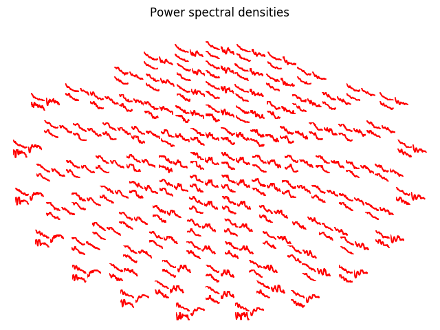

Note
Click here to download the full example code
This example exposes the iter_topography function that makes it very easy to generate custom sensor topography plots. Here we will plot the power spectrum of each channel on a topographic layout.
Out:
Opening raw data file /home/circleci/mne_data/MNE-sample-data/MEG/sample/sample_audvis_filt-0-40_raw.fif...
Read a total of 4 projection items:
PCA-v1 (1 x 102) idle
PCA-v2 (1 x 102) idle
PCA-v3 (1 x 102) idle
Average EEG reference (1 x 60) idle
Range : 6450 ... 48149 = 42.956 ... 320.665 secs
Ready.
Current compensation grade : 0
Reading 0 ... 41699 = 0.000 ... 277.709 secs...
Filtering raw data in 1 contiguous segment
Setting up band-pass filter from 1 - 20 Hz
l_trans_bandwidth chosen to be 1.0 Hz
h_trans_bandwidth chosen to be 5.0 Hz
Filter length of 497 samples (3.310 sec) selected
Effective window size : 1.705 (s)
# Author: Denis A. Engemann <denis.engemann@gmail.com>
#
# License: BSD (3-clause)
import numpy as np
import matplotlib.pyplot as plt
import mne
from mne.viz import iter_topography
from mne import io
from mne.time_frequency import psd_welch
from mne.datasets import sample
print(__doc__)
data_path = sample.data_path()
raw_fname = data_path + '/MEG/sample/sample_audvis_filt-0-40_raw.fif'
raw = io.read_raw_fif(raw_fname, preload=True)
raw.filter(1, 20, fir_design='firwin')
picks = mne.pick_types(raw.info, meg=True, exclude=[])
tmin, tmax = 0, 120 # use the first 120s of data
fmin, fmax = 2, 20 # look at frequencies between 2 and 20Hz
n_fft = 2048 # the FFT size (n_fft). Ideally a power of 2
psds, freqs = psd_welch(raw, picks=picks, tmin=tmin, tmax=tmax,
fmin=fmin, fmax=fmax)
psds = 20 * np.log10(psds) # scale to dB
def my_callback(ax, ch_idx):
"""
This block of code is executed once you click on one of the channel axes
in the plot. To work with the viz internals, this function should only take
two parameters, the axis and the channel or data index.
"""
ax.plot(freqs, psds[ch_idx], color='red')
ax.set_xlabel = 'Frequency (Hz)'
ax.set_ylabel = 'Power (dB)'
for ax, idx in iter_topography(raw.info,
fig_facecolor='white',
axis_facecolor='white',
axis_spinecolor='white',
on_pick=my_callback):
ax.plot(psds[idx], color='red')
plt.gcf().suptitle('Power spectral densities')
plt.show()
Total running time of the script: ( 0 minutes 8.379 seconds)
Estimated memory usage: 285 MB